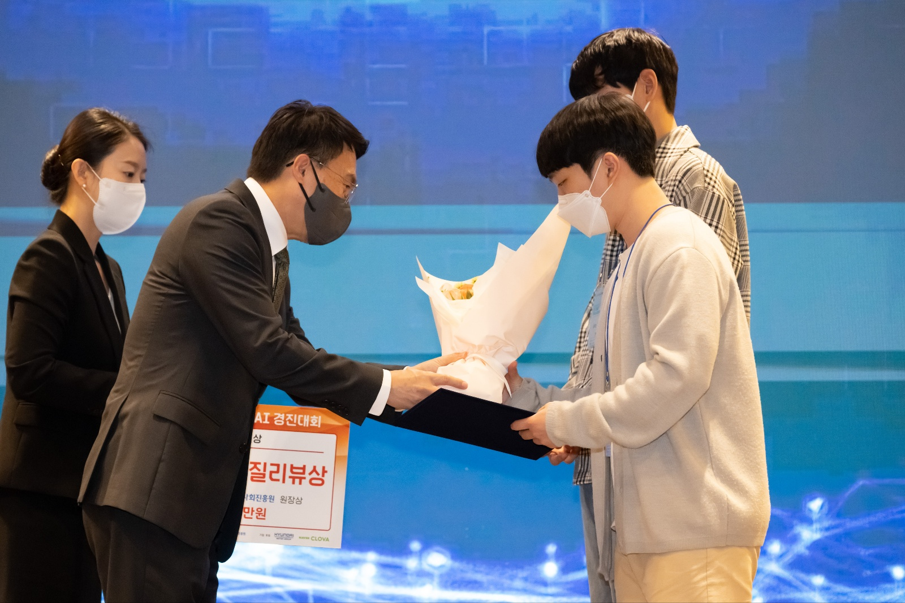
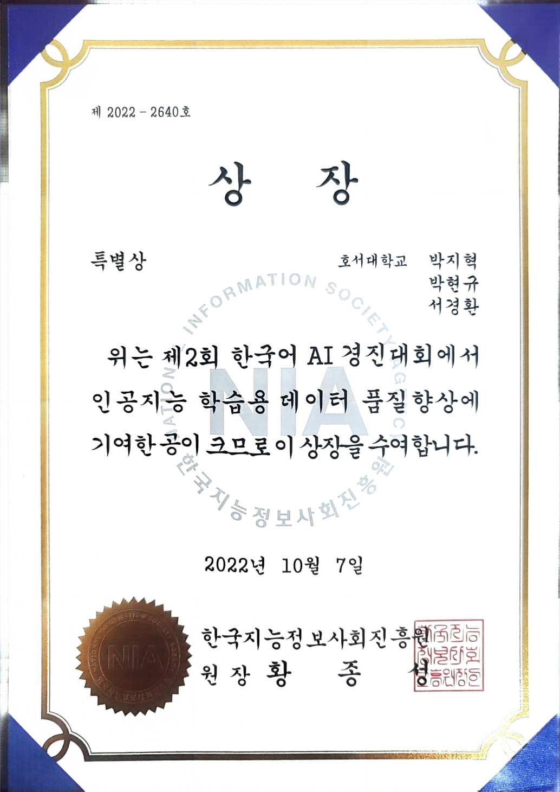
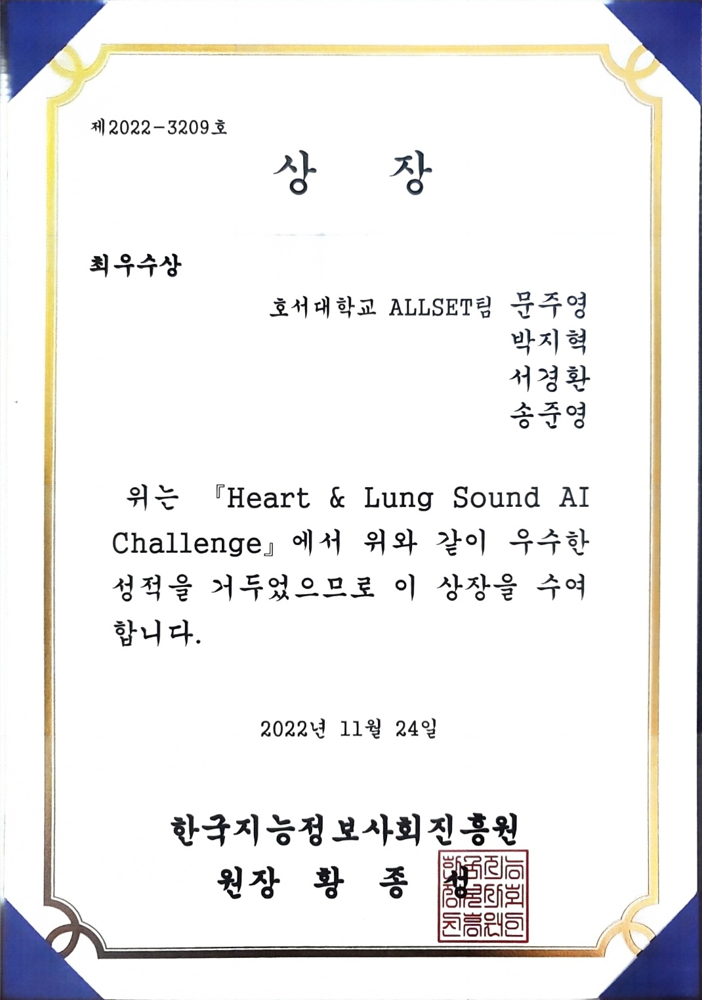
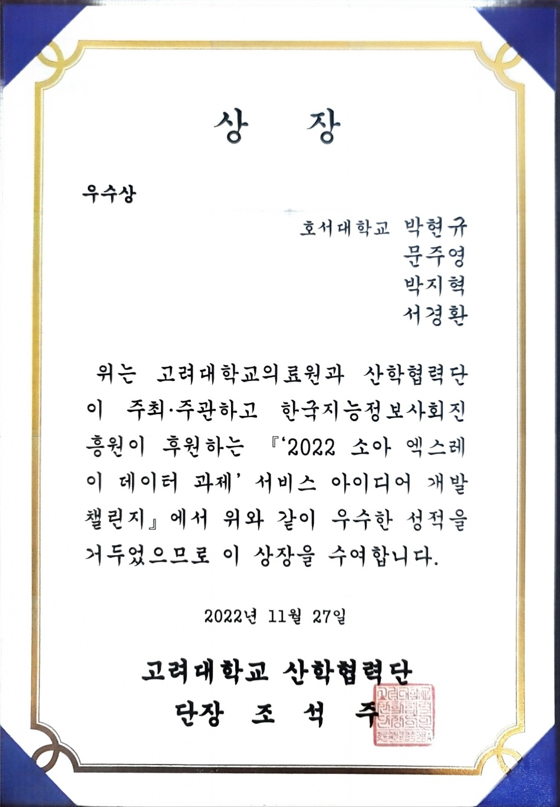
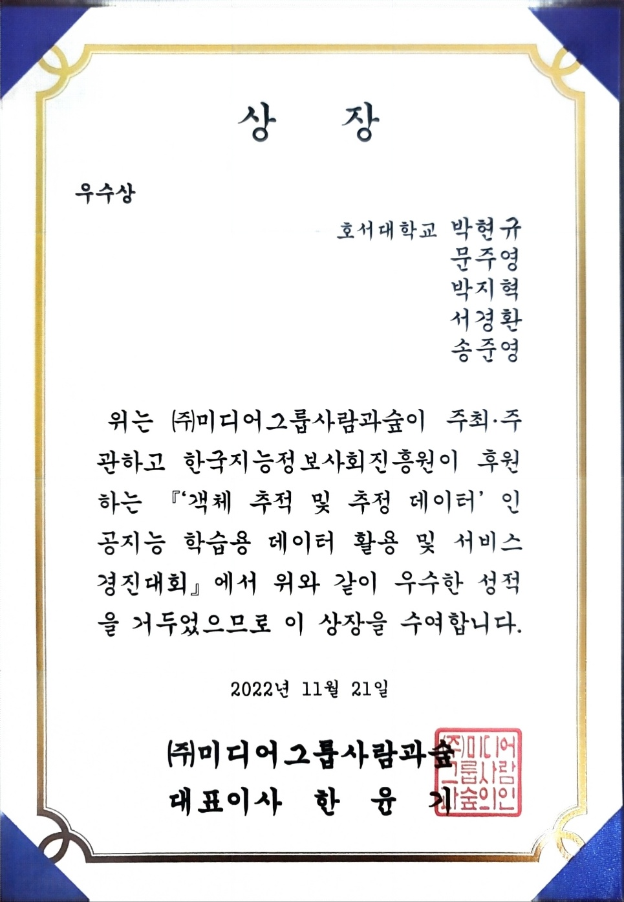
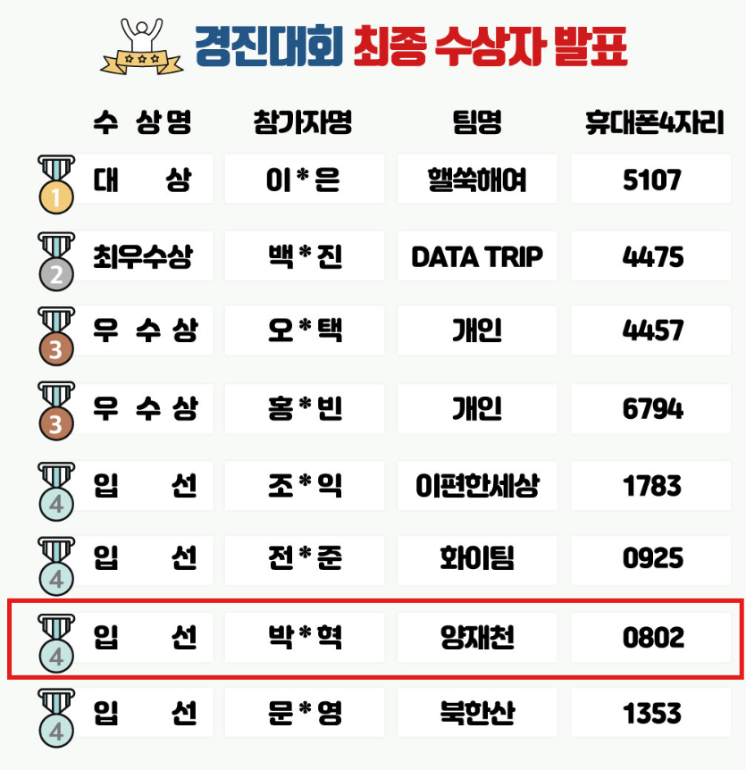
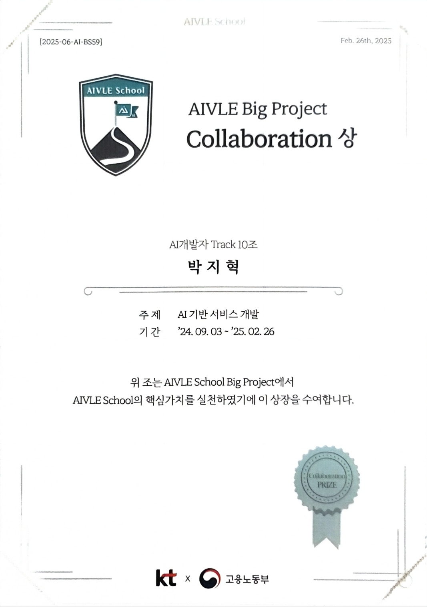

infinite
possibilities
박지혁 (Park JiHyeok)
- Birth: 1998.11.09
- Mobile: +82 10.4492.0802
- Email: peter110998@naver.com
AI 개발자로서의 강점
- End-to-End 멀티모달 경험 ─ 텍스트·음성·이미지 등 다양한 데이터를 수집·전처리하고, 멀티모달 모델 아키텍처 설계와 파라미터 튜닝까지 직접 수행했습니다.
- 5회 수상으로 검증된 실력 ─ 한국어 음성인식·오디오 초해상도·의료영상 AI 경진대회에서 최우수상 포함 총 5회 입상해 문제 해결 역량을 입증했습니다.
- 생성형 AI 서비스화 ─ GPT-4o API와 Vision-LLM 결합 파이프라인을 구축해 사내 프로토타입을 배포하고 의사결정 지원 지표를 40% 단축했습니다.
- MLOps 기반 운영 ─ Docker·Kubernetes·FastAPI로 inference 서버를 자동화하고, Prometheus·Grafana로 실시간 모니터링 환경을 구현했습니다.
웹 개발자로서의 경험
- 실전 배포 경험 ─ 약 6개월 동안 모 기업에서 사용하는 연차료 관리 시스템을 기획·디자인·퍼블리싱 팀과 2주 스프린트로 협업하며 개발한 끝에, 현재까지도 200+ 임직원이 안정적으로 사용 중입니다.
- 백엔드 전문성 ─ Django·Spring Boot·Node.js 기반 REST API 설계 경험이 풍부하며, AI 모델을 탑재한 웹 애플리케이션을 다수 개발하여 실제 예측·분석 기능이 동작하는 서비스로 구현해낸 경험이 있습니다.
웹 개발자로서의 태도
- 사용자 중심 설계 ─ ‘왜 필요할까?’를 먼저 고민하고, 데이터를 근거로 기능을 제안·검증하여 불필요한 개발 사이클을 줄입니다.
- 지속 가능한 코드 ─ 테스트 코드와 문서화를 기본으로 하여 인수인계 없는 환경에서도 유지·보수가 용이한 구조를 지향합니다.
SKILLS & ABILITIES
Web Development
- Front-End: HTML5, CSS, JavaScript, React.js
- Back-End: Node.js, Express, Spring Boot, Django, FastAPI
- Database/DevOps: MySQL, SQLite, AWS(EC2, Lightsail), Docker, Azure
AI & Data
- Python: Pandas, NumPy
- Machine/Deep Learning: TensorFlow, Keras, PyTorch
- Data Visualization: Matplotlib, Seaborn
Collaboration & Tools
- Version Control: Git, GitHub
- Project Management: Confluence, Notion
- Communication: Slack
- IDE & Tools: IntelliJ, VS Code, Figma
CERTIFICATES
정보처리기사 (2024. 06.18 취득)
수상내역

제2회한국어AI경진대회 (특별상)
- 수상일자: 2022.10.07
- 주최: 한국지능정보사회진흥원
- 활동내용: JSON 형식으로 된 한국어 문장들을 가공하여 학습에 용이한 상태로 변환하기, 또 푸리에 고속변환을 사용하여 wav파일을 주파수 형태로 출력하는 등 데이터 전처리와 Baseline 코드를 이용한 음성인식 AI모델을 개발하였습니다.

Heart & Lung Sound AI Challenge (최우수상)
- 수상일자: 2022.11.24
- 주최: 한국지능정보사회진흥원
- 활동내용: Audio Super-Resolution 기술을 활용하여 Heart&Lung Sound데이터에서 1Hz, 1msec의 해상도로 주파수를 추출함으로써, 기존 저해상도 추출 과정에서 발생하는 정보손실로 인한 Heart&Lung Detect 인식 성능향상으로 정확한 판별을 할 수 있도록 하였습니다.

2022 소아 엑스레이 데이터 과제 서비스 아이디어 개발 챌린지 (우수상)
- 수상일자: 2022.11.27
- 주최: 고려대학교 산학협력단
- 활동내용: PGGAN을 이용해 질병 진단 Multi Label Classification 모델 학습을 진행하였고, 최종적으로 휴대용 X-ray촬영 장비로 환자의 X-ray를 촬영하고 이를 구급차 혹은 공공 보건의료 센터 내의 컴퓨터에 전송 하여 진단을 내리 는 프로세스를 기획하였습니다.

객체 추적 및 추정 데이터, 인공지능 학습용 데이터 활용 및 서비스 경진대회 (우수상)
- 수상일자: 2022.11.21
- 주최: (주)미디어그룹사람과숲
- 활동내용: Super-Resolution 알고리즘을 활용하여 영상 데이터 중 판별하기 어려운 상황(저조도/노이즈 포함)에 대해 분석하여 안전사고/범죄상황 예측 정확도를 높이고 현장 경보 송출 및 관리자 알림을 제공하여 사고 예방/신속대응이 가능한 시스템을 개발하고자 하였습니다. 핵심기술로 SRGAN을 활용하여 영상 화질을 개선시켰습니다.

2023 헬스케어 AI경진대회 (입상)
- 수상일자: 2023.12.21
- 주최: 서울대학교치과병원
- 활동내용: 데이터셋 전처리 방법으로 이미지 데이터와 JSON형식의 라벨 데이터를 입력받아, 이미지를 이진 분류 라벨 (0 또는 1)로 변환하였습니다. 모델 학습 과정으로 TensorFlow를 사용하여 간단한 컨볼루션 신경망(CNN) 모델을 정의하고 훈련하는데 사용하며 Conv2D로 이미지의 특징을 추출하였고, MaxPooling2D로이미지를 다운샘플링하며 계산 비용을 줄였습니다.

AIVLE Big Project Collaboration상
- 수상일자: 2025.02.26
- 주최: KT & 고용노동부
- 활동내용: KT와 고용노동부가 운영하는 Aivle School 교육 프로그램을 이수하면서 진행했던 프로젝트 입니다. 비바리퍼블리카(Toss)를 겨냥한 B2B 프로젝트로, 최재호 신임대표가 공표한 “2년간 토스플레이스 단말기 보급 10배 확대” 목표에 맞게 토스 단말기를 사용할 시 자영업자가 얻는 이득을 극대화 할 수 있다는 이점을 앞세워, 보급률을 늘릴 수 있도록 유도하는 웹앱을 개발하였습니다. SpringBoot, React, FastAPI, Docker, Azure 등과 같은 기술스택들을 사용하였습니다.
my works
-

KT Aivle School
KT AIVLE SCHOOL을 수료하면서 진행했던 Toss를 겨냥한 B2B 프로젝트로, 토스플레이스의 목표에 맞게 단말기를 사용할 시 자영업자가 얻는 이득을 극대화 할 수 있다는 이점을 앞세워, 보급률을 늘릴 수 있도록 유도하였습니다.
View Details -
AI-Hub 데이터셋 구축
2022 인공지능 학습용 데이터 구축 지원사업의 데이터 활용 환류분야에서 당뇨관리 앱을 통한 음식 이미지 활용 프로젝트에 참여하였으며, 구축된 데이터셋이 AI-Hub에 등재되었습니다.
Go site View Details -
명지역길

-

중기부 과제로 제작한 우리동네 골목상권의 활성화에 도움을 주는 공익적인 서비스 앱입니다. PlayStore 와 AppStore에서 다운받아 보실 수 있습니다다.
Go site View Details
Experiences
호서대학교
호서대학교 컴퓨터공학과 졸업
아이티엘
대학교 3학년부터 약 2년 6개월간 학생연구원 신분으로 아이티엘(주)에서 근무하였습니다. 크롤링을 통한 데이터 수집 자동화와 React, Node.js를 이용한 웹개발, Django로 웹앱 개발 등을 하였습니다.
음식 이미지 데이터셋 구축
‘당뇨관리 앱을 통한 음식 이미지 활용 및 환류’ 데이터셋 구축 과정에서 음식 이미지 외부 수집을 담당하였습니다. 'AI-Hub'에 데이터셋이 등재되었습니다.
반려동물 진단 플랫폼 개발
반려동물 진단, 산책, 및 훈련 일정 등을 체계적으로 관리할 수 있게 돕는 웹을 개발하였습니다. Django, JavaScript, JQuery 등으로 웹페이지를 구성하였고, 프롬프트 엔지니어링과 GPT API를 활용해 반려동물 진단 기능을 구현하였습니다.
지역 경제 활성화 정부 프로젝트
코로나19 장기화로 쇠퇴하는 천안의 원도심 지역의 상권 활성화를 장려하는 프로젝트를 진행했습니다. 충청남도일자리경제진흥원과 협력하였고, Unity와 Django를 이용해 상권을 웹툰배경의 가상현실 지도로 나타냈습니다.
꿀픽
중소벤처기업부 과제에 선정되어 진행했던 프로젝트로, 우리동네 골목상권의 활성화에 도움을 주는 공익적인 서비스를 개발하였습니다. Django와 HTML5, JavaScript를 사용하였습니다.
스마트팜
'Hoseo University AgTech Digital Twin Global Center' 와 기업'트윈나노' 에서 스마트팜 관련 자문연구원으로 활동하였습니다. 송화버섯을 인식하고 생장단계를 판단하는 AI모델과 쪽파를 수확하는 로봇의 소프트웨어 개발을 담당하였습니다.
KT Aivle School
KT와 고용노동부가 운영하는 Aivle School 교육 프로그램을 이수하였습니다. AI/DX 혁신사례와 경험을 바탕으로한 기업 실전 프로젝트를 중심으로 기업 실무형 AI 문제를 해결하는 방법을 배웠으며, AI, Spring Boot, HTML5, JAVA와 같은 다양한 기술스택들을 연마하였습니다.